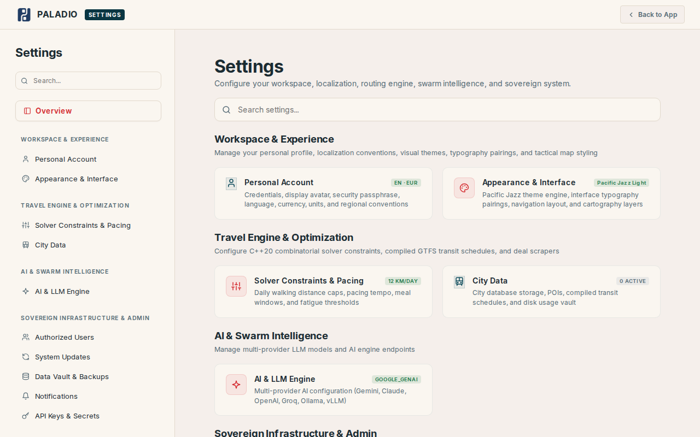

Configuration and environment variables¶
Paladio splits configuration cleanly between static bootstrap credentials in .env (for PostgreSQL, JWT signing, wallet encryption, and container networking) and dynamic runtime settings stored in PostgreSQL system_config via Settings (/config).

How .env and /config work together¶
Keep root infrastructure secrets in .env, then manage solvers, LLM providers, backups, photo sync, notifications, and Travelpayouts keys directly inside /config so changes take effect without editing compose manifests.
Settings category in /config |
Sections included | Access level |
|---|---|---|
| Workspace & Experience | Personal Account (profile, avatar, password, language, base currency, units, clock, date format, holiday country) and Appearance & Interface (3 Pacific Jazz themes, Inter/Classic typography, Sidebar/Dock navigation, 4 cartography layers) | Any signed-in user |
| Travel Engine & Optimization | Solver Constraints & Pacing (walking cap, tempo, meal windows, fatigue thresholds) and City Data (POIs, Valhalla OSM tiles, compiled GTFS feeds, disk vault) | Admin only |
| AI & Swarm Intelligence | AI & LLM Engine (13 optional chat LLM providers, hardware RAM profile, Ollama unload) | Admin only |
| Sovereign Infrastructure & Admin | Authorized Users, System Updates, Data Vault & Backups (snapshots + Immich/Synology photo sync), Notifications (Pushify, Pushover, Ntfy, Custom Webhooks), and API Keys & Secrets | Admin only |
Core database, authentication, and storage variables¶
Set these variables in .env (or container environment overrides) before running docker compose up -d in production.
| Variable | Default | Required in production | Purpose |
|---|---|---|---|
POSTGRES_USER |
postgres |
Yes | PostgreSQL database superuser or application role name |
POSTGRES_PASSWORD |
postgres |
Yes | PostgreSQL password (generated automatically by install.sh / install.ps1) |
POSTGRES_DB |
paladio |
Yes | Primary PostgreSQL database holding TimescaleDB and pgvector tables |
DATABASE_URL |
Compose DSN | Yes (non-Docker) | Async SQLAlchemy connection string (postgresql+asyncpg://…) |
POSTGRES_HOST |
db |
Compose default | Hostname used by helper scripts and health probes |
REDIS_URL |
redis://redis:6379/0 |
Yes | Redis broker, result backend, pub/sub channels, and locks |
ENVIRONMENT |
development |
Set production |
Controls strict production checks for JWT_SECRET_KEY and WALLET_ENCRYPTION_KEY |
JWT_SECRET_KEY |
Persisted data/.jwt_secret |
Yes | HS256 signing secret (generate with openssl rand -hex 32) |
JWT_SECRET_PATH |
data/.jwt_secret |
No | Fallback secret file path (0600) when JWT_SECRET_KEY is unset outside production |
ACCESS_TOKEN_EXPIRE_MINUTES |
1440 |
No | JWT token lifetime in minutes (1440 = 24 hours) |
WALLET_ENCRYPTION_KEY |
Dev seed only | Yes | Fernet symmetric key protecting Bookings Wallet secrets (access_code, Wi-Fi keys) |
ALLOWED_ORIGINS |
http://localhost:3000,http://127.0.0.1:3000 |
Yes (custom domain) | Comma-separated CORS allowlist for the FastAPI gateway |
ALLOW_PUBLIC_REGISTRATION |
false |
No | Enables self-signup at /register after the initial admin exists |
PALADIO_API_TOKEN |
Unset | For MCP stdio |
Bearer secret used when running python -m app.mcp over stdio |
API_PORT / FRONTEND_PORT |
8000 / 3000 |
No | Host port overrides consumed by docker-compose.yml |
PHOTO_STORAGE_DIR |
data/trip_photos |
No | Disk directory for uploaded trip gallery photos |
WALLET_STORAGE_DIR |
data/wallet_attachments |
No | Disk directory for uploaded boarding pass PDFs and images |
Geographic routing, ONNX embeddings, and translation variables¶
Tune local pathfinding, CPU semantic vector inference, and optional translation endpoints through these variables.
| Variable | Default | Purpose |
|---|---|---|
VALHALLA_URL |
http://valhalla:8002 |
Self-hosted Valhalla HTTP router (http://localhost:8002 outside Compose) |
OSM_PBF_DIR |
/custom_files |
Shared volume path where downloaded OpenStreetMap PBF extracts live |
GTFS_BASE_DIR |
/gtfs_feeds |
Shared volume path storing downloaded and sanitized city GTFS ZIP feeds |
TRANSITOUS_URL |
https://api.transitous.org/api/v2 |
Fallback MOTIS public transit routing server when a city has no local GTFS feed |
FASTEMBED_MODEL |
nomic-ai/nomic-embed-text-v1.5-Q |
Quantized ONNX model used for 768-dimensional semantic vectors |
FASTEMBED_CACHE_PATH |
/opt/models/fastembed |
Pre-baked container directory holding downloaded ONNX weights |
FASTEMBED_THREADS |
2 |
CPU intra-op thread cap for in-process ONNX inference |
FASTEMBED_OFFLINE |
Unset | Set true to prevent any outbound Hugging Face hub download checks |
FASTEMBED_IDLE_TIMEOUT_SECONDS |
Unset | Idle timeout in seconds before OnnxEmbeddingProvider unloads weights from RAM |
PALADIO_TASTE_PERSONALIZATION_ENABLED |
true |
Set false to disable personalized taste re-ranking globally |
DEEPL_API_KEY |
Unset | Optional DeepL API key for translating POI descriptions |
LIBRETRANSLATE_URL / LIBRETRANSLATE_API_KEY |
Unset | Optional self-hosted LibreTranslate fallback URL and key |
ODPT_API_KEY / ODPT_CONSUMER_KEY / ODPT_BASE_URL |
Unset | Optional Tokyo Open Data Challenge (ODPT) transit fare adapter credentials |
APP_VERSION / GITHUB_REPO / GITHUB_TOKEN |
Code version / Leandro-Juan/paladio |
Overrides for the in-app GitHub release auto-updater |
Optional chat agent LLM environment overrides¶
Although Settings (/config under AI & LLM Engine) stores active provider settings in PostgreSQL system_config, you can also supply keys through environment variables.
| Variable | Purpose |
|---|---|
LLM_PROVIDER / LLM_MODEL / LLM_API_KEY / LLM_BASE_URL |
Explicit active provider override (openai, anthropic, google, groq, deepseek, mistral, openrouter, xai, perplexity, together, cerebras, custom_openai, ollama) |
OLLAMA_BASE_URL |
Local or LAN Ollama endpoint (default http://localhost:11434/v1) |
OPENAI_API_KEY, ANTHROPIC_API_KEY, GEMINI_API_KEY, GOOGLE_API_KEY, GROQ_API_KEY, DEEPSEEK_API_KEY, MISTRAL_API_KEY, OPENROUTER_API_KEY, XAI_API_KEY, PERPLEXITY_API_KEY, TOGETHER_API_KEY, CEREBRAS_API_KEY |
Per-provider fallback API keys read when no database credential overrides them |
TRIP_AGENT_MAX_TOKENS |
Maximum completion token budget per turn (1024 default) |
Deal Engine switches and tuning variables¶
All behavioral parameters in backend/app/engine/market/config.py (MarketConfig) accept environment overrides without changing source code.
| Variable | Default | Purpose |
|---|---|---|
TRAVELPAYOUTS_TOKEN / AVIASALES_TOKEN |
Unset (or DB secret) | Travelpayouts Data API v3 token for Aviasales cache sweeps |
AVIASALES_MARKET / AVIASALES_CURRENCY / AVIASALES_MAX_RPM |
es / EUR / 60 |
Point-of-sale market code, currency, and requests-per-minute token bucket limit |
FLIGHT_PROXY_URLS, LODGING_PROXY_URLS, MARKET_PROXY_URLS |
Unset | Optional comma-separated HTTP/SOCKS proxies for flight and lodging pools |
MARKET_ENABLE_SWEEP, MARKET_ENABLE_BASELINES, MARKET_ENABLE_DETECTION, MARKET_ENABLE_VERIFICATION, MARKET_ENABLE_AVIASALES, MARKET_ENABLE_RYANAIR, MARKET_ENABLE_LODGING |
true |
Granular feature kill switches for each pipeline stage and provider |
MARKET_SCAN_HORIZON_DAYS / MARKET_CORPUS_HORIZON_MONTHS |
330 / 11 |
Forward scanning window for route sweeps and corpus backfills |
MARKET_R_MAX / MARKET_P_ANCHOR / MARKET_MIN_ABS_SAVINGS_CENTS |
0.75 / 0.25 / 3000 |
Deal threshold ratio, quantile anchor (<= P25), and minimum 30.00 EUR savings |
MARKET_LODGING_MIN_QUALITY / MARKET_REALISM_MIN |
70.0 / 8.0 |
Minimum hotel rating (0–100 normalized) and itinerary realism score gate |
MARKET_BREAKER_FAILURES / MARKET_BREAKER_COOLDOWN_HOURS |
5 / 24 |
Circuit-breaker failure threshold and cooldown before re-enabling a failing provider |
MARKET_LIVE_DAILY_BUDGET_TIER2 / MARKET_LIVE_DAILY_BUDGET_TIER3 |
200 / 50 |
Daily live verification call caps protecting external provider tiers |
MARKET_MAX_ALERTS_PER_USER_PER_DAY |
3 |
Maximum outbound deal alerts dispatched per user per day |
Next, review Managing city POIs, Valhalla maps, and GTFS to hydrate destinations and compile transit schedules.